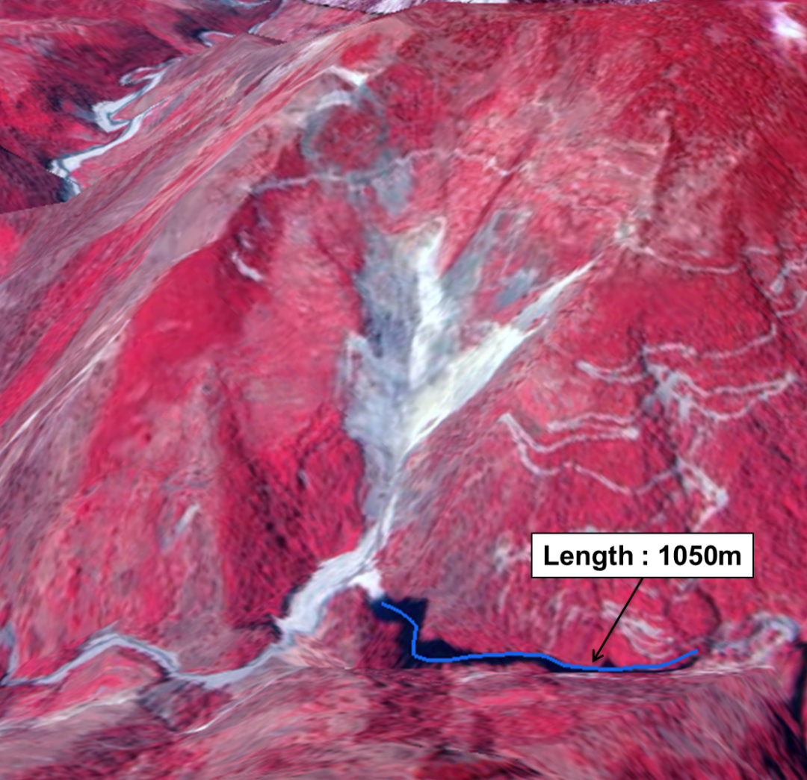
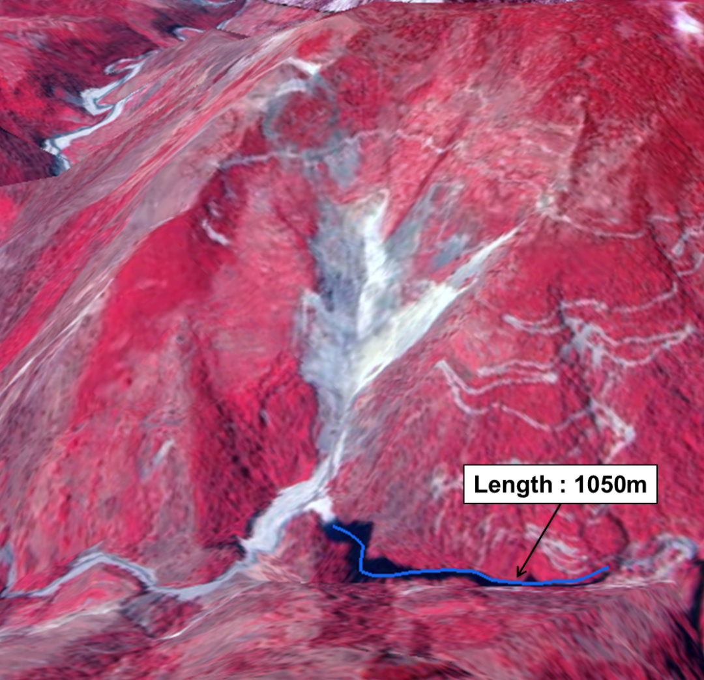

In Brief
- The Kunwari landslide is situated on the right bank of the Baura Gad, a tributary of Pindar River in Bagehswar District
- This barrier lake has been observed to intermittently form and drain since 2014
- In 2022, the landslide reactivated again along a pre-existing slope break, a zone of inherent weakness, blocking a tributary of the Pindar River in April and June
The Kunwari landslide is situated on the right bank of the Baura Gad, a tributary of Pindar River in Bagehswar District This barrier lake has been observed to intermittently form and drain since 2014 In 2022, the landslide reactivated again along a pre-existing slope break, a zone of inherent weakness, blocking a tributary of the Pindar River in April and June